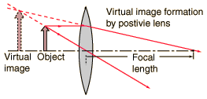

|
A virtual image is formed at the
position where the paths of the
principal rays cross when
projected backward from their
paths beyond the lens. Although a
virtual image does not form a visible
projection on a screen, it is no sense
"imaginary", i.e., it has a definite position and size
and can be "seen" or imaged by the eye, camera, or other optical instrument.
|

|